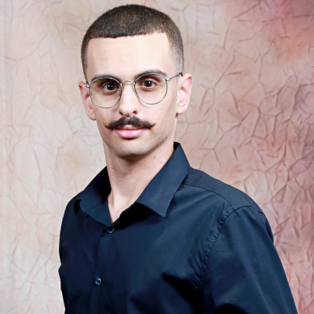

Meu currículo
By: Matheus Carvalho Roldão

Certo, quem eu sou?
- Nome: Matheus Carvalho Roldão
- Idade: 18 anos
- Profissão: Estudante de Sistemas para Internet
- Meus Hobbies:
- Jogar videogame
- Ver filmes/séries
- Estudar
- Ir pra academia
- Escutar músicas
- Escolaridade: Ensino médio completo
- Email: matheus.roldao@estudante.iftm.edu.br
Um pouco sobre mim
Sou estudante de Sistemas para Internet no IFTM, com vários anos de experiência com tecnologia. Sou aficionado
por cibersegurança, tecnologias, jogos digitais e principalmente o mundo automobilístico. Ainda não possuo
experiências profissionais mas busco um estágio e sempre estou a procura de conhecimento.
No tempo livre vejo
alguns vídeos para relaxar como Peter Aqui e Games Eduu. Gosto de resolver enigmas (Ae
Mysteries) e descobrir coisas novas. Curto bastante filmes e tudo relacionado à ficção científica.
Algumas coisas que eu gosto
Carros
- Ford Mustang GT 500 Shelby 2013
- Porsche 911 GT3 RS
- Mercedes AMG GT
- Nissan GTR R35 e R34
- Toyota Supra MK4 1998
Filmes
- Tron - O Legado
- Gran Turismo: De Jogador a Corredor
- Jogador Nº 1
- Assassin's Creed
Jogos
- Cyberpunk 2077
- Franquia Assassin's Creed
- Horizon Zero Dawn
- The Crew 2 e Motorfest
- Destiny 2
- Ae Mysteries
- Gran Turismo 7
Músicas
- Vicetone - Nevada
- Salem - Starfall
- Laura Brehm - The Calling, MayDay, Frame of Mind
- Atmozfears - Release, Come Running
- Kdrew - The Last Train to Paradise
- Bad Computer - New Dawn